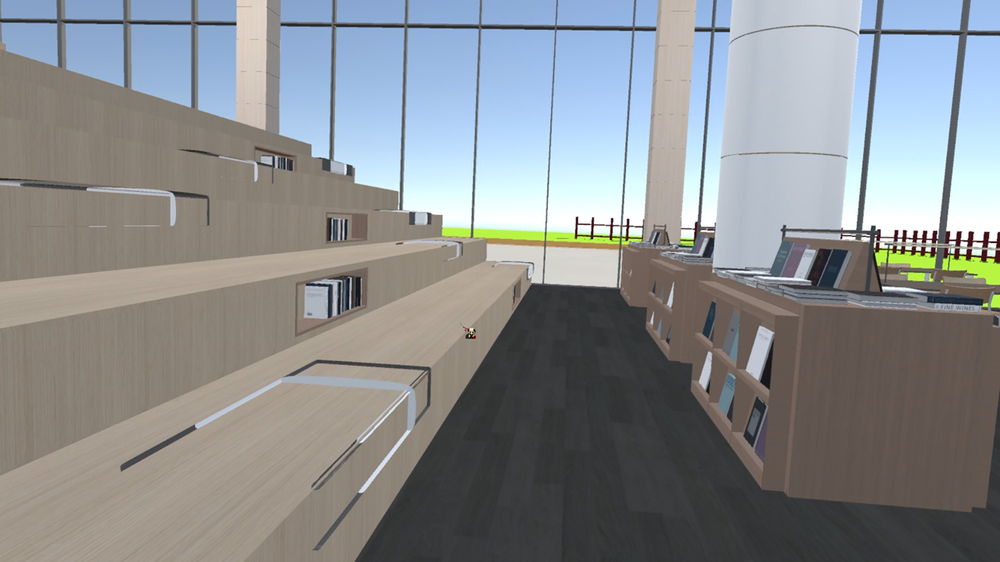
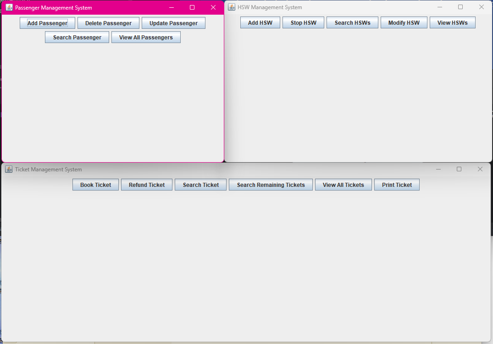
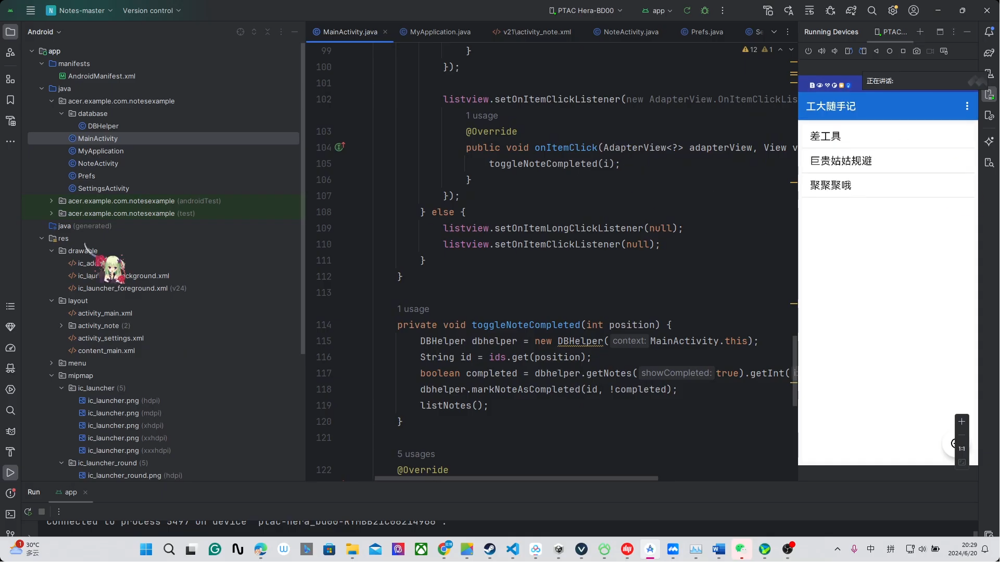
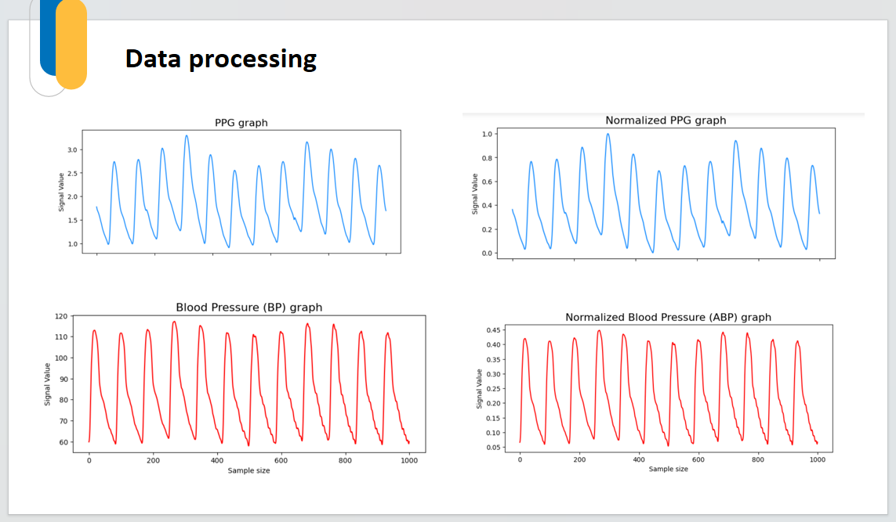
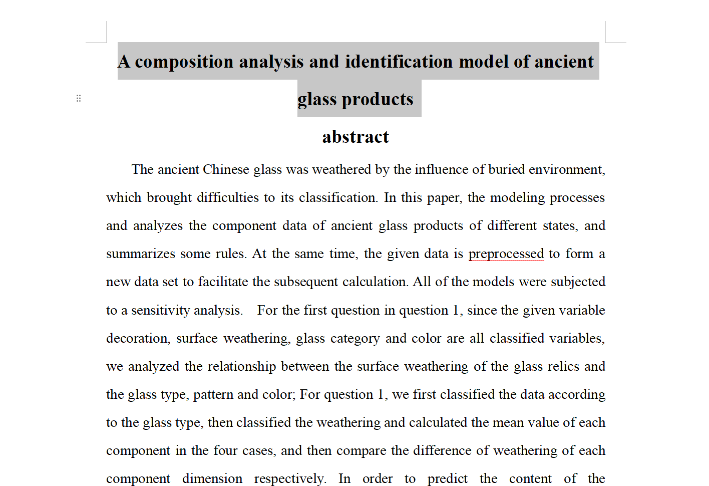
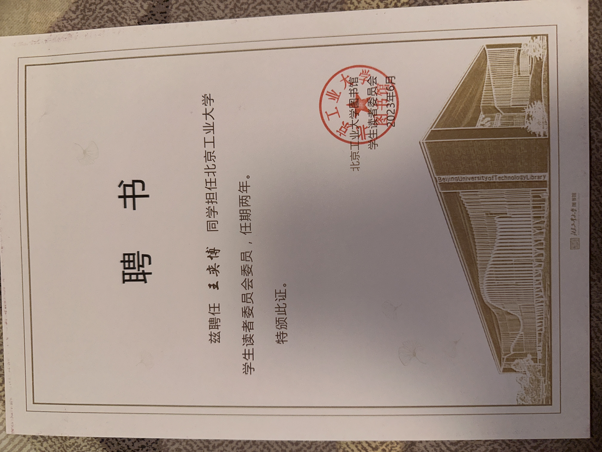
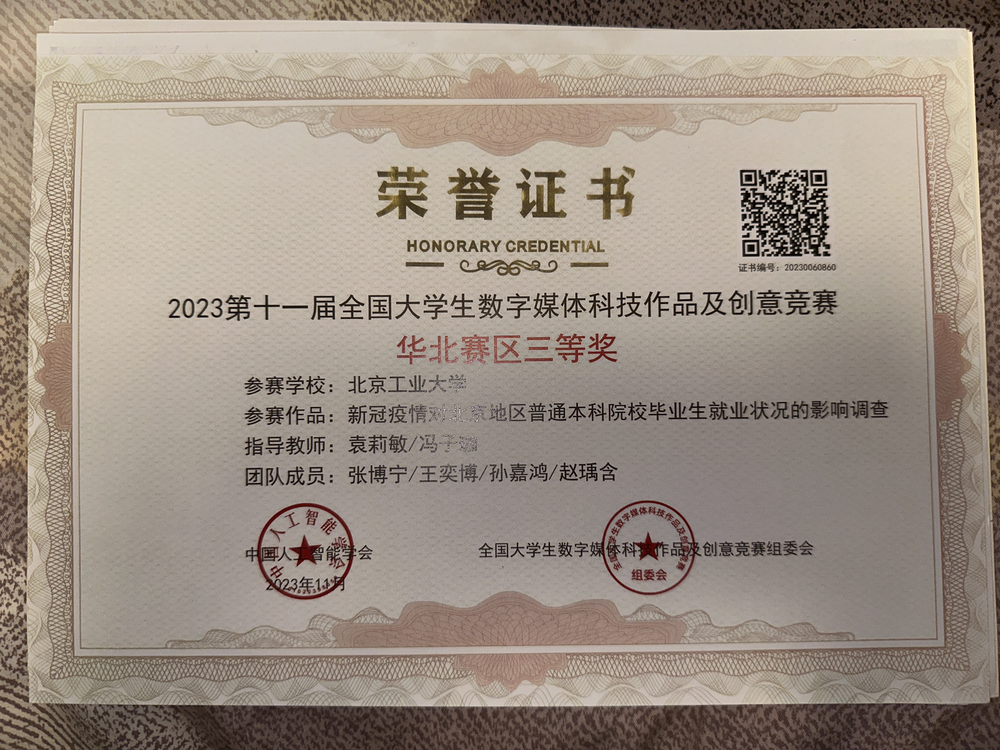
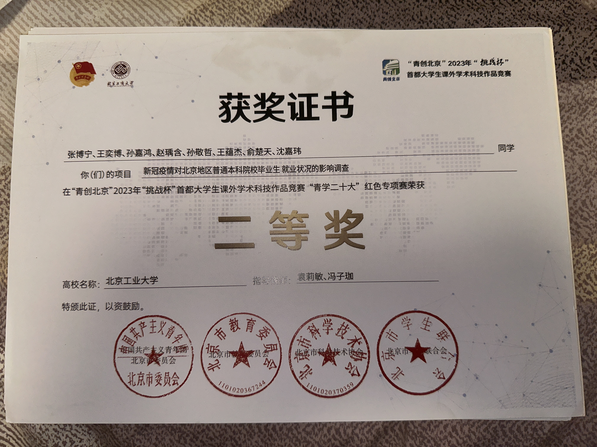

Featured Game
Fit to Pass
A body-shifting platformer where traversal mechanics carry both challenge design and theme.
Open case studyI am Yibo Wang, a game designer and technical developer focused on gameplay feel, level flow, interaction logic, and cross-disciplinary production. My strongest work sits where design intent meets implementation: Unity prototypes, Unreal experiences, custom-engine collaboration, VR interaction, and technical systems that stay readable for players.
These are the projects that best represent how I think: mechanics first, experience clarity, and technical implementation close to the design process.
Art assets used in several game projects were not created by me. The design, gameplay logic, UI layout, level structure, and technical implementation shown here were my work.
A body-shifting platformer where traversal mechanics carry both challenge design and theme.
Open case study
A narrative-heavy action adventure with Metroidvania structure, combat gating, and engine-level collaboration.
Open case study
An interactive driving narrative built around accident reconstruction, scene reading, and emotional pacing.
Open case studyI am most useful when the work needs both design judgment and implementation discipline.
I build mechanics, progression loops, encounter flow, and environmental guidance with player readability in mind.
I can move from intent to working behavior in Unity, Unreal, custom-engine collaboration, and software-heavy prototypes.
Research, video, photography, and community work make me better at framing ideas, pitching them, and communicating them clearly.
The homepage stays focused on game work. Everything else remains accessible through a categorized archive.

A VR library experience that turns reading, retrieval, and exhibition design into an explorable interactive world.

A Sengoku-era action adventure focused on chase sequences, puzzle flow, and readable exploration pressure.

A Java management system that brings together object-oriented design, GUI workflows, and transport data handling.

A recognition pipeline that combines image preprocessing, neural inference, and multimodal output for practical use.

An Android note-taking tool designed around clear task flow, lightweight storage, and fast day-to-day usability.

A non-invasive monitoring concept using PPG signals, LSTM-based estimation, and mobile delivery for real-time health tracking.

A workflow for producing accessible animated avatars through AI image generation, cleanup, and rig-ready processing.

A mathematical modeling project for classifying ancient glass artifacts through composition analysis, clustering, and prediction.

A crime drama short centered on strategy, revenge, and shifting power dynamics through cinematic staging.

A research-driven video presentation translating survey findings into a clear public-facing narrative.

A historical video project built around archival material, timeline storytelling, and voice-led structure.

A psychological drama using reference, humor, and social critique to discuss modern pressure and involution.

A still-image collection focused on architecture, landscape, framing, and atmosphere through DSLR photography.

Aerial work exploring scale, terrain, and spatial rhythm through drone-based landscape capture.

Campus documentation and event support work shaped by visual communication, coordination, and steady delivery under pressure.

Interactive science teaching that turns abstract topics into participatory learning through experiments and group activities.

A service and programming role focused on cultural events, user feedback, and improving the student library experience.

Regional recognition for translating research on graduate employment into a strong digital media presentation.

Challenge Cup recognition for a youth science and technology project examining graduate employment trends.

An interdisciplinary team project on PV module degradation that connected technical investigation with business framing.
The surrounding projects are not noise. They explain how I observe users, teach ideas, communicate visually, and operate across different production contexts.
My portfolio leads with systems, mechanics, and interactive narrative because that is the work I want to deepen professionally.
They show I can handle structured logic, data-heavy work, and system design beyond presentation-level prototypes.
That range helps when a project needs design sense, technical follow-through, and public-facing clarity at the same time.
I am most interested in work that connects game design with technical execution: gameplay prototyping, systems implementation, level scripting, interaction design, and cross-disciplinary production.